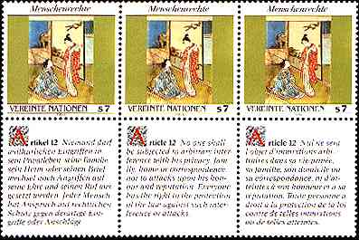

|
Dedicated to the
50th anniversary of the Universal Declaration of Human Rights, 1998
Eternal vigilance is the price of liberty. Thomas Jefferson. Much
earlier.
Universal Declaration of
Human Rights, resolution adopted unanimously in December 1948 by the General Assembly of
the United Nations. The objective of the 30-article declaration is to promote and
encourage respect for human rights and fundamental freedoms.
 |
 |
The declaration proclaims the
personal, civil, political, economic, social, and cultural rights of humans, which are
limited only by recognition for the rights and freedoms of others and the requirements of
morality, public order, and general welfare. Among the rights cited by the declaration are
the rights to life, liberty, and security of person; to freedom from arbitrary arrest; to
a fair trial; to be presumed innocent until proved guilty; to freedom from interference
with the privacy of one's home and correspondence; to freedom of movement and residence;
to asylum, nationality, and ownership of property; to freedom of thought, conscience,
religion, opinion, and expression; to association, peaceful assembly, and participation in
government; to social security, work, rest, and a standard of living adequate for health
and well-being; to education; and to participation in the social life of one's community.
(After Microsoft Encarta 1996.)
|